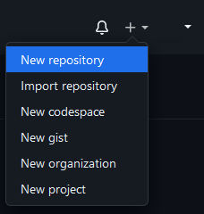
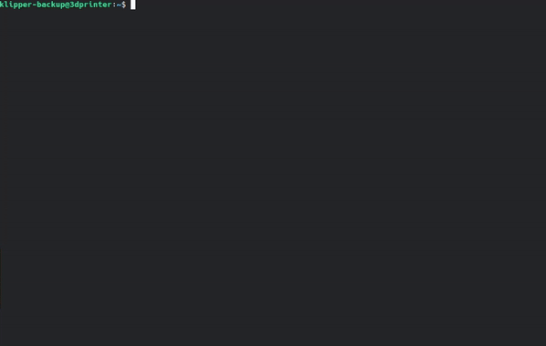

Installation
git¶
You need git for this script.
Debian / Ubuntu based distributions
Arch / Manjaro based distributions
Prepare GitHub repository¶
- Log in to GitHub
- Click on the
+in the upper right corner - Click on "New repository"
Danger
Don't create a README.md at this point! You can create your own later.

The most important part in the next window is here to give the repository a name, you will need this later.
Create GitHub token¶
- In GitHub, click on the profile in the upper right corner and click
Settings→Developer settings→Personal access tokens→Fine-grained tokens→Generate new token- Use the following settings:
- Click
Generate new token
Copy the new token, you will need this later.
Installation¶
There are two ways at this point. Whatever you choose, the installation script guides you through the essential steps. Have your GitHub token ready for this. You can decide during the installation whether you want to install some features like backup on boot, backup on file changes, or even add the moonraker entry, etc (this can also be done afterwards).
1. Native¶
Download:
Install:
Info
You can run the install.sh script at any time to install any features!
2. KIAUH¶
KIAUH supports Klipper-Backup since v6.0.0. Download KIAUH, select E for Extension and select 4 for Klipper-Backup:
